护肤人格
测试
以 8 道护肤问答连接用户的护肤认知、需求与偏好，最终生成可保存、可分享的护肤人格结果。页面以轻松的手绘角色和高识别度的紫黄配色，降低测试参与门槛并强化结果传播。
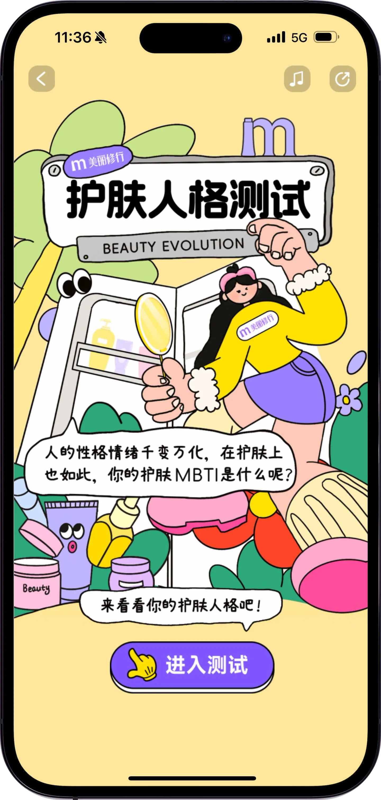
测试流程与交互步骤
01 / 入口到结果分享测试以清晰的进度、单选与多选题型承接连续答题。完成后将答案映射为护肤人格、关键词与结果卡，引导用户保存或分享给好友。
用角色、护肤柜和主标题解释测试主题，明确“进入测试”的主要操作。
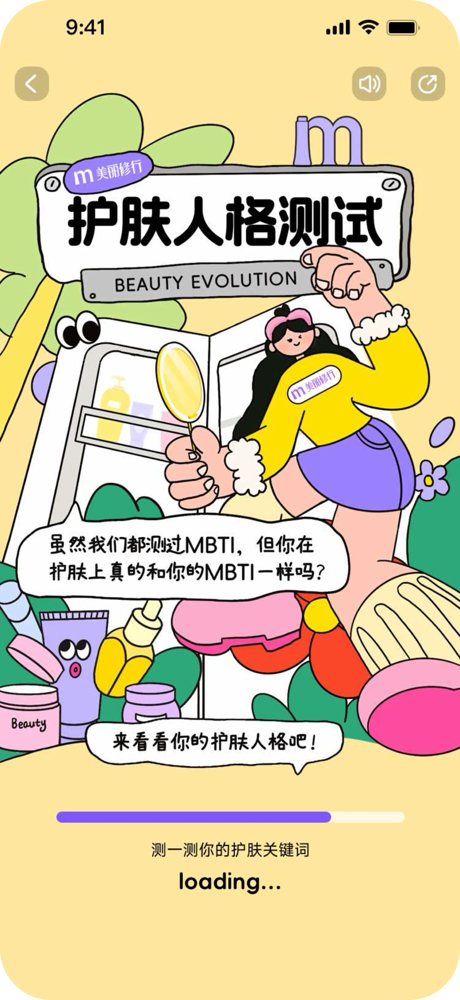
在等待阶段展示核心插画和进度条，提示用户即将获取护肤关键词。
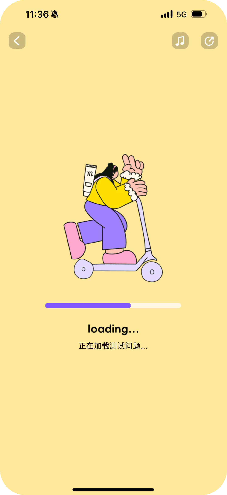
通过独立加载页衔接测试开始，保留角色动作并减少空白等待感。
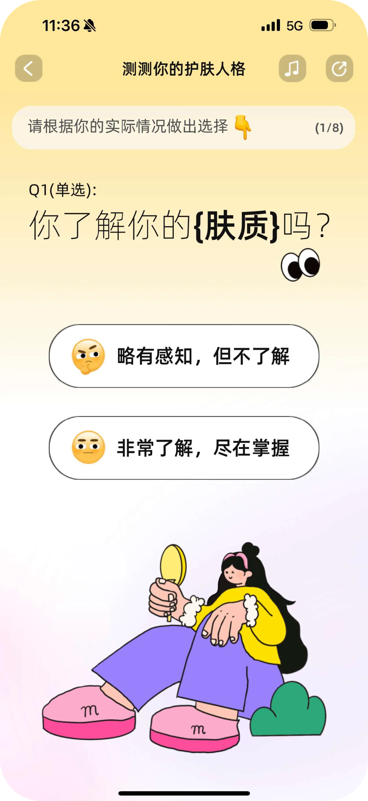
展示 1/8 的当前进度，以大字号问题和完整点击区域降低理解成本。
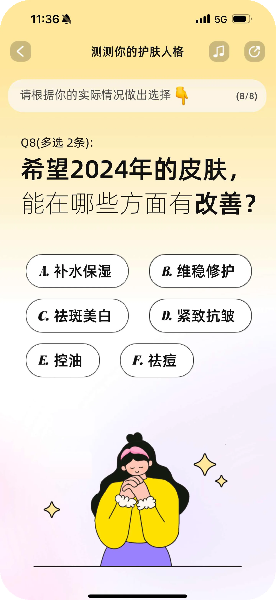
在收尾题目中标注“多选 2 条”，用选项栅格承接多种护肤目标。
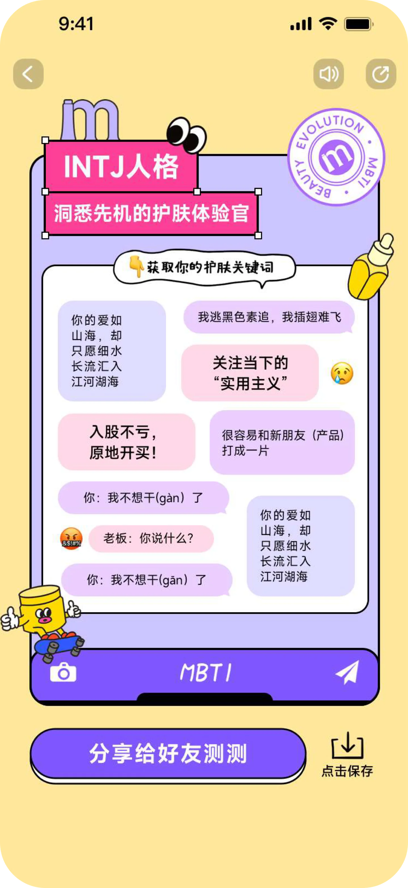
将答案转换为人格标题、护肤定位和关键词，形成可传播的个性化结果。
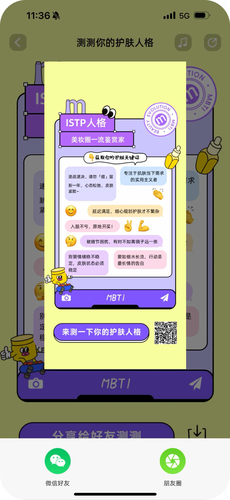
生成带二维码的结果长图并调起微信分享面板，完成传播闭环。
人格结果卡与 UI 细节
02 / 结果系统统一使用聊天窗口作为结果载体，通过不同标题色、人格代号和护肤身份区分结果；关键词采用气泡消息形式，既便于阅读，也为社交分享提供熟悉的视觉语境。
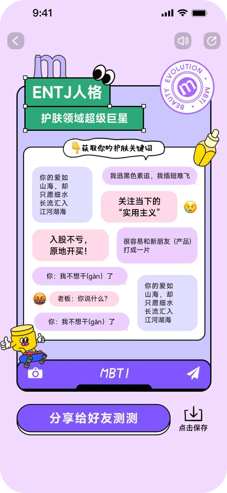
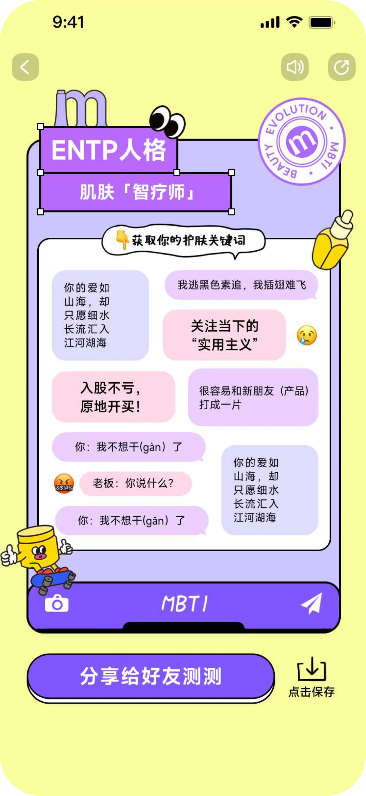
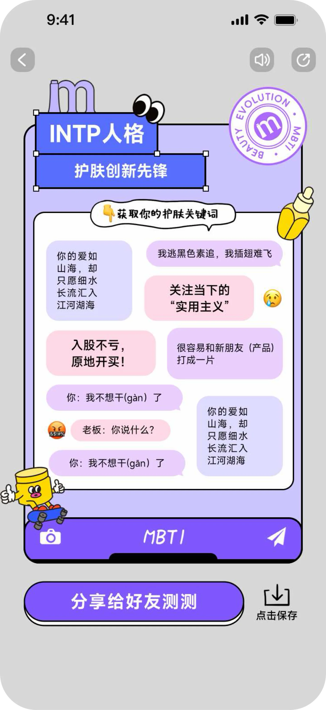
插画资产与界面思考
03 / 角色语言将同一角色拆分为滑行、护手和照镜三种动作，分别服务加载、护肤语境和自我观察。插画保持统一的粗轮廓、黄色上衣、紫色下装与粉色点缀，确保各页面之间的视觉连贯。
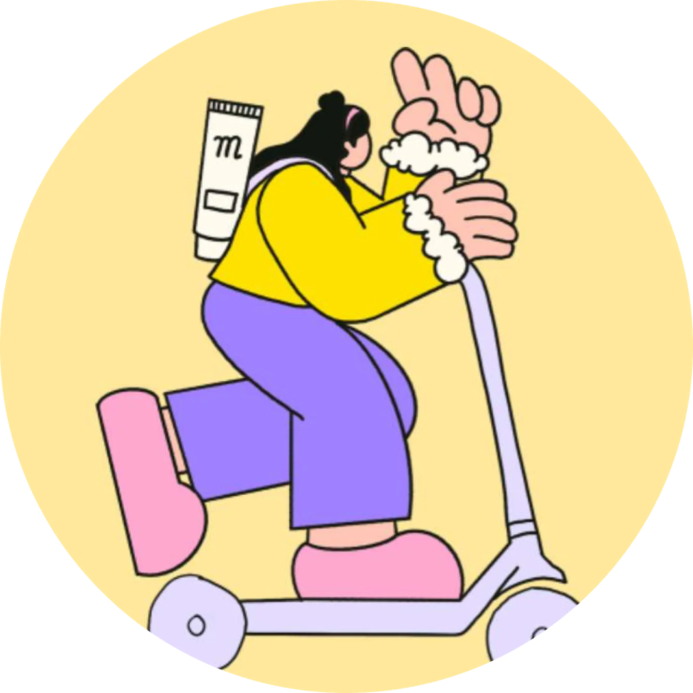
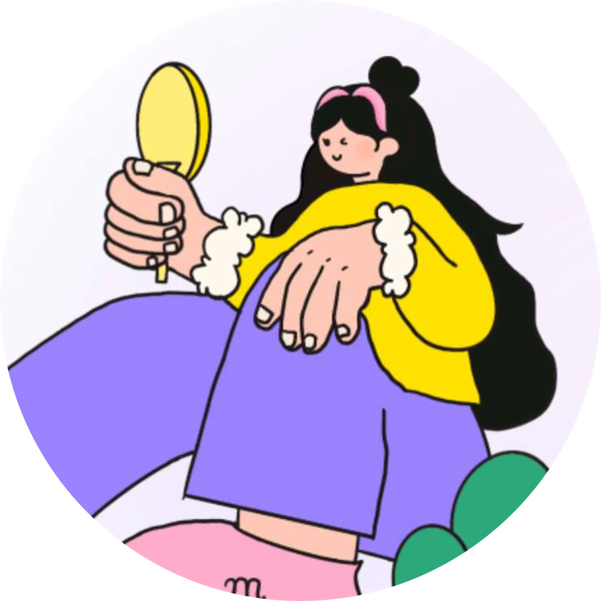
加载条与 1/8、8/8 的题目计数让用户始终知道测试位置和剩余任务。
通过“单选”“多选 2 条”标签和不同选项布局，提前说明本题的选择规则。
人格名称、关键词和分享按钮集中在一张长图中，支持保存与社交平台分发。
入口与活动资源位
04 / 多版本传播入口视觉保留测试招牌、角色与 CTA；针对不同阶段切换文案与配色，使常规测试入口、加载页与“开年新测试”传播海报可以在站内外独立使用。
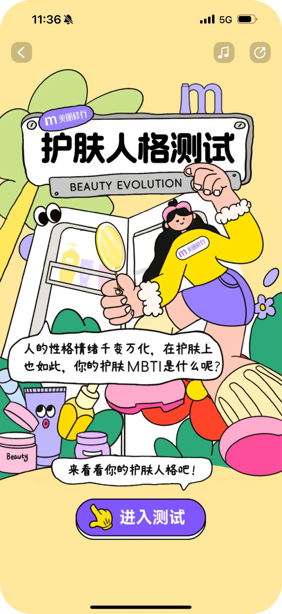
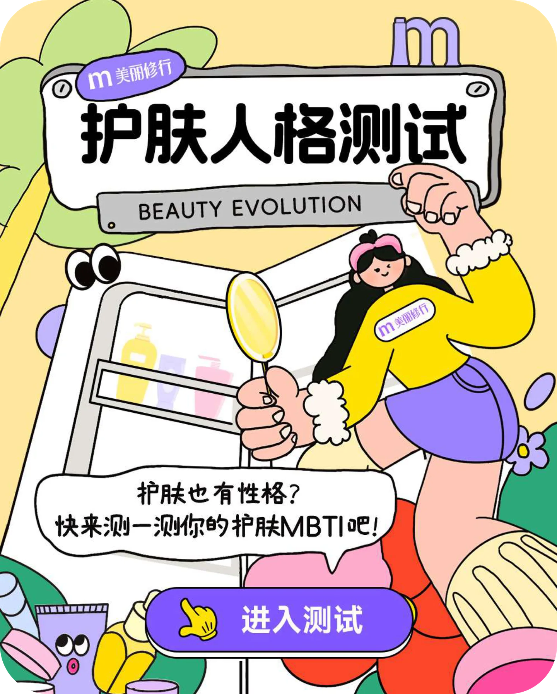
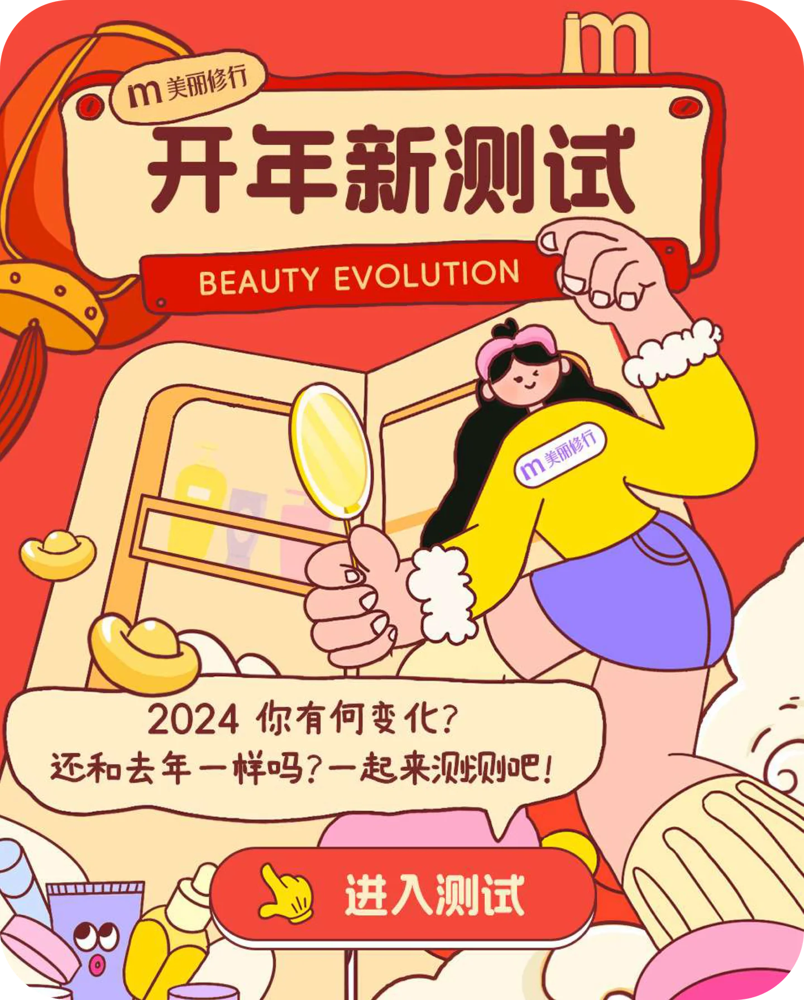
项目页按用户进入、加载、答题、结果生成与分享的顺序整理，集中呈现护肤人格测试的界面、插画资产和传播资源位。